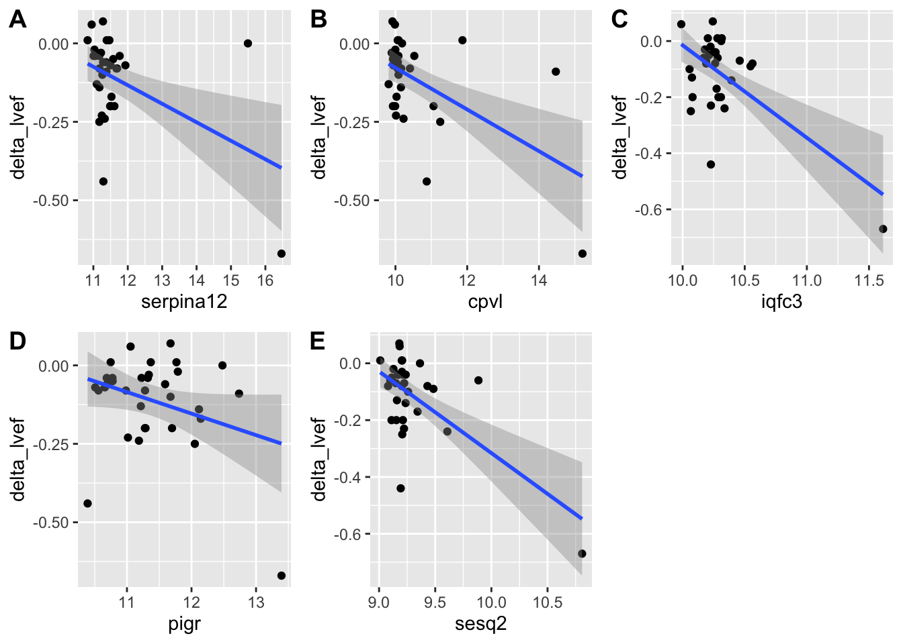

Multivariate_Analysis
Michael Leukam
2023-10-12
Last updated: 2023-10-13
Checks: 6 1
Knit directory: anthracycline/
This reproducible R Markdown analysis was created with workflowr (version 1.7.1). The Checks tab describes the reproducibility checks that were applied when the results were created. The Past versions tab lists the development history.
The R Markdown file has unstaged changes. To know which version of
the R Markdown file created these results, you’ll want to first commit
it to the Git repo. If you’re still working on the analysis, you can
ignore this warning. When you’re finished, you can run
wflow_publish to commit the R Markdown file and build the
HTML.
Great job! The global environment was empty. Objects defined in the global environment can affect the analysis in your R Markdown file in unknown ways. For reproduciblity it’s best to always run the code in an empty environment.
The command set.seed(20231012) was run prior to running
the code in the R Markdown file. Setting a seed ensures that any results
that rely on randomness, e.g. subsampling or permutations, are
reproducible.
Great job! Recording the operating system, R version, and package versions is critical for reproducibility.
Nice! There were no cached chunks for this analysis, so you can be confident that you successfully produced the results during this run.
Great job! Using relative paths to the files within your workflowr project makes it easier to run your code on other machines.
Great! You are using Git for version control. Tracking code development and connecting the code version to the results is critical for reproducibility.
The results in this page were generated with repository version 8bbf76c. See the Past versions tab to see a history of the changes made to the R Markdown and HTML files.
Note that you need to be careful to ensure that all relevant files for
the analysis have been committed to Git prior to generating the results
(you can use wflow_publish or
wflow_git_commit). workflowr only checks the R Markdown
file, but you know if there are other scripts or data files that it
depends on. Below is the status of the Git repository when the results
were generated:
Ignored files:
Ignored: .RData
Ignored: .Rhistory
Ignored: .Rproj.user/
Untracked files:
Untracked: .DS_Store
Untracked: data/Statistical Analysis.csv
Unstaged changes:
Modified: analysis/multivariate.Rmd
Note that any generated files, e.g. HTML, png, CSS, etc., are not included in this status report because it is ok for generated content to have uncommitted changes.
These are the previous versions of the repository in which changes were
made to the R Markdown (analysis/multivariate.Rmd) and HTML
(docs/multivariate.html) files. If you’ve configured a
remote Git repository (see ?wflow_git_remote), click on the
hyperlinks in the table below to view the files as they were in that
past version.
| File | Version | Author | Date | Message |
|---|---|---|---|---|
| html | 8bbf76c | Michael Leukam | 2023-10-13 | Build site. |
| Rmd | d0a998d | Michael Leukam | 2023-10-13 | workflowr::wflow_publish("analysis/multivariate.Rmd") |
#output: workflowr::wflow_html
#editor_options:
# chunk_output_type: consoleSetup
library("tidyverse")── Attaching core tidyverse packages ──────────────────────── tidyverse 2.0.0 ──
✔ dplyr 1.1.3 ✔ readr 2.1.4
✔ forcats 1.0.0 ✔ stringr 1.5.0
✔ ggplot2 3.4.4 ✔ tibble 3.2.1
✔ lubridate 1.9.3 ✔ tidyr 1.3.0
✔ purrr 1.0.2
── Conflicts ────────────────────────────────────────── tidyverse_conflicts() ──
✖ dplyr::filter() masks stats::filter()
✖ dplyr::lag() masks stats::lag()
ℹ Use the conflicted package (<http://conflicted.r-lib.org/>) to force all conflicts to become errorslibrary("ggpubr")
library("broom")
library("purrr")Load data
dset <- read_csv("data/Statistical Analysis.csv")Rows: 33 Columns: 40
── Column specification ────────────────────────────────────────────────────────
Delimiter: ","
chr (7): MRN, Gender, Race, Diagnosis, Asymptomatic CTRCD, Developed Cardio...
dbl (33): Number, Patient ID, Age, PreLVEF, PreGLS, PosLVEF, PosGLS, Relativ...
ℹ Use `spec()` to retrieve the full column specification for this data.
ℹ Specify the column types or set `show_col_types = FALSE` to quiet this message.Data Cleaning
Dataset includes 5 proteins that survived Bonferroni correction. Outcome variables are relative delta LVEF and relative delta GLS, as well as “developed cardiotoxicity”. Predictor variables are the baseline values of the 5 proteins.
- Renal toxicity: use GFR as continuous variable (maybe try cutoff?)
- Obesity: use BMI as continuous variable (maybe try cutoff?)
- Sex: factor
- Age: continuous variable (integer)
- Race: factor
- Diagnosis: factor, DLBCL vs other or cHL vs DLBCL?
# remove PHI
dset %>% colnames() %>% print() [1] "Number" "MRN"
[3] "Patient ID" "Age"
[5] "Gender" "Race"
[7] "Diagnosis" "PreLVEF"
[9] "PreGLS" "PosLVEF"
[11] "PosGLS" "Relative Delta GLS"
[13] "Relative Delta LVEF" "Asymptomatic CTRCD"
[15] "Developed Cardiotoxicity" "Treatment Start Date"
[17] "Creatinine (mg/dL)" "BUN"
[19] "eGFR (CKD-EPI) (mL/min/1.73m2)" "Height (in)"
[21] "Height (cm)" "Height (m)"
[23] "Weight (lbs)" "Weight (Kg)"
[25] "BMI" "SERPINA12 Baseline"
[27] "SERPINA12 3-Months" "SERPINA12 Relative Change"
[29] "CPVL Baseline" "CPVL 3-Months"
[31] "CPVL Relative Change" "PIGR Baseline"
[33] "PIGR 3-Months" "PIGR Relative Change"
[35] "IQFC3 Baseline" "IQFC3 3-Months"
[37] "IQFC3 Relative Change" "SESQ2 Baseline"
[39] "SESQ2 3-Months" "SESQ2 Relative Change" dset_clean <- dset %>%
select(-MRN) %>%
select(-`Treatment Start Date`)
dset_clean %>% colnames() %>% print() [1] "Number" "Patient ID"
[3] "Age" "Gender"
[5] "Race" "Diagnosis"
[7] "PreLVEF" "PreGLS"
[9] "PosLVEF" "PosGLS"
[11] "Relative Delta GLS" "Relative Delta LVEF"
[13] "Asymptomatic CTRCD" "Developed Cardiotoxicity"
[15] "Creatinine (mg/dL)" "BUN"
[17] "eGFR (CKD-EPI) (mL/min/1.73m2)" "Height (in)"
[19] "Height (cm)" "Height (m)"
[21] "Weight (lbs)" "Weight (Kg)"
[23] "BMI" "SERPINA12 Baseline"
[25] "SERPINA12 3-Months" "SERPINA12 Relative Change"
[27] "CPVL Baseline" "CPVL 3-Months"
[29] "CPVL Relative Change" "PIGR Baseline"
[31] "PIGR 3-Months" "PIGR Relative Change"
[33] "IQFC3 Baseline" "IQFC3 3-Months"
[35] "IQFC3 Relative Change" "SESQ2 Baseline"
[37] "SESQ2 3-Months" "SESQ2 Relative Change" # make table of response and predictor variables
# assign correct data types (factors)
dset_vars <- dset_clean %>%
select("study_id" = `Patient ID`,
"age" = "Age",
"sex" = "Gender",
"race" = "Race",
"disease" = "Diagnosis",
"gfr" = `eGFR (CKD-EPI) (mL/min/1.73m2)`,
"bmi" = "BMI",
"cardiotox" = `Developed Cardiotoxicity`,
"delta_gls" = `Relative Delta GLS`,
"delta_lvef" = `Relative Delta LVEF`,
"serpina12" = `SERPINA12 Baseline`,
"cpvl" = `CPVL Baseline`,
"pigr" = `PIGR Baseline`,
"iqfc3" = `IQFC3 Baseline`,
"sesq2" = `SESQ2 Baseline`
) %>%
# fix missing data notation
mutate(cardiotox = replace(cardiotox, cardiotox == "N/A", NA)) %>%
# convert categorical variables to factors
mutate_at(c("sex", "cardiotox", "race", "disease"), as.factor) %>%
# create cutoff categorial variables
mutate(abn_gfr = ifelse(gfr < 90, "abnormal", "normal")) %>%
mutate(abn_bmi = ifelse(bmi > 29.9, "obese", "not_obese")) %>%
# fix problematic categories (too small groups)
mutate(race_category = ifelse(race == "White", "white", "other")) %>%
mutate(disease_category = ifelse(disease == "DLBCL", "DLBCL", "other")) %>%
mutate_at(c("race_category", "disease_category", "abn_gfr", "abn_bmi"), as.factor)
# potential problematic variable -- race
# most are white, some categories only have 1 person
summary(dset_vars$race) African American Asian Declined to Answer Hispanic
6 1 1 2
White
23 # could consider white vs all else, or exclude
summary(dset_vars$race_category)other white
10 23 # potential problematic variable -- disease
summary(dset_vars$disease) AML DLBCL
1 21
Double Hit B-Cell Lymphoma Follicular Lymphoma
1 2
High Grade B-Cell Lymphoma Hodgkin's Lymphoma
1 5
Non-Hodgkin's Lymphoma T-Cell, Histiocyte Rich LBCL
1 1 # probably just exclude for now until there are enough data points for meaningful groupings
summary(dset_vars$disease_category)DLBCL other
21 12 glimpse(dset_vars)Rows: 33
Columns: 19
$ study_id <dbl> 5, 6, 8, 14, 23, 24, 25, 30, 32, 34, 35, 36, 37, 41, …
$ age <dbl> 24, 70, 44, 49, 57, 61, 69, 61, 29, 27, 68, 60, 81, 7…
$ sex <fct> Female, Male, Female, Female, Male, Female, Female, F…
$ race <fct> White, African American, African American, White, Asi…
$ disease <fct> "Non-Hodgkin's Lymphoma", "Follicular Lymphoma", "T-C…
$ gfr <dbl> 124, 65, 93, 110, 103, 73, 94, 102, 123, 121, 102, 11…
$ bmi <dbl> 19.9, 24.0, 34.5, 23.6, 23.8, 19.2, 30.2, 29.1, 28.7,…
$ cardiotox <fct> 0, 1, 1, 1, 0, 0, 1, 0, 0, 0, 0, 1, 1, 1, 0, 0, 1, 0,…
$ delta_gls <dbl> 0.10, -0.18, -0.74, -0.28, -0.08, -0.03, -0.16, -0.11…
$ delta_lvef <dbl> 0.06, -0.23, -0.67, -0.20, -0.07, -0.05, -0.06, -0.14…
$ serpina12 <dbl> 10.95099, 11.24573, 16.46818, 11.48794, 11.49590, 11.…
$ cpvl <dbl> 9.985415, 10.015415, 15.212774, 9.991380, 9.945444, 9…
$ pigr <dbl> 11.05630, 11.01555, 13.39428, 11.69831, 10.65750, 10.…
$ iqfc3 <dbl> 9.989111, 10.227736, 11.613513, 10.308453, 10.188960,…
$ sesq2 <dbl> 9.183139, 9.222070, 10.807677, 9.212132, 9.224002, 9.…
$ abn_gfr <fct> normal, abnormal, normal, normal, normal, abnormal, n…
$ abn_bmi <fct> not_obese, not_obese, obese, not_obese, not_obese, no…
$ race_category <fct> white, other, other, white, other, white, white, whit…
$ disease_category <fct> other, other, other, other, DLBCL, DLBCL, other, DLBC…Exploratory Data Analysis
Visualize distributions
look for significant ouliers or non parametric distribution
# age
dset_vars %>%
ggplot() +
geom_bar(mapping = aes(x = age))
| Version | Author | Date |
|---|---|---|
| 8bbf76c | Michael Leukam | 2023-10-13 |
# roughly parametric, long left tail
# sex
dset_vars %>%
ggplot() +
geom_bar(mapping = aes(x = sex))
| Version | Author | Date |
|---|---|---|
| 8bbf76c | Michael Leukam | 2023-10-13 |
# roughly even
# GFR
dset_vars %>%
ggplot() +
geom_bar(mapping = aes(x = gfr))
| Version | Author | Date |
|---|---|---|
| 8bbf76c | Michael Leukam | 2023-10-13 |
# roughly parametric
# obesity
dset_vars %>%
ggplot() +
geom_bar(mapping = aes(x = bmi))
| Version | Author | Date |
|---|---|---|
| 8bbf76c | Michael Leukam | 2023-10-13 |
# roughly parametric, long right tail, two outliers on right
# disease
dset_vars %>%
ggplot() +
geom_bar(mapping = aes(x = disease))
| Version | Author | Date |
|---|---|---|
| 8bbf76c | Michael Leukam | 2023-10-13 |
# most are DLBCL, could do DLBCL vs all else or Hodgkin vs non-Hodgkin
# protein 1
dset_vars %>%
ggplot() +
geom_histogram(mapping = aes(x = serpina12))`stat_bin()` using `bins = 30`. Pick better value with `binwidth`.
| Version | Author | Date |
|---|---|---|
| 8bbf76c | Michael Leukam | 2023-10-13 |
# two outliers to the right
# protein 2
dset_vars %>%
ggplot() +
geom_histogram(mapping = aes(x = cpvl))`stat_bin()` using `bins = 30`. Pick better value with `binwidth`.
| Version | Author | Date |
|---|---|---|
| 8bbf76c | Michael Leukam | 2023-10-13 |
# two outliers to the right, long tail to right
# protein 3
dset_vars %>%
ggplot() +
geom_histogram(mapping = aes(x = pigr))`stat_bin()` using `bins = 30`. Pick better value with `binwidth`.
| Version | Author | Date |
|---|---|---|
| 8bbf76c | Michael Leukam | 2023-10-13 |
# parametric distribution
# protein 4
dset_vars %>%
ggplot() +
geom_histogram(mapping = aes(x = iqfc3))`stat_bin()` using `bins = 30`. Pick better value with `binwidth`.
| Version | Author | Date |
|---|---|---|
| 8bbf76c | Michael Leukam | 2023-10-13 |
# outlier to the right
# protein 5
dset_vars %>%
ggplot() +
geom_histogram(mapping = aes(x = sesq2))`stat_bin()` using `bins = 30`. Pick better value with `binwidth`.
| Version | Author | Date |
|---|---|---|
| 8bbf76c | Michael Leukam | 2023-10-13 |
# long tail to rightPlot outcome variables
Cardiotoxicity - factor variable coded as 1 = cardiotoxicity and 0 = no cardiotoxicity. Two rows with missing data for cardiotox due to lack of strain data from echo.
serpina12 <- dset_vars %>%
filter(!is.na(cardiotox)) %>%
ggplot(mapping = aes(x = cardiotox, y = serpina12)) +
geom_violin() +
stat_compare_means(method = "t.test", label.x = 1, label.y = 5) +
expand_limits(x = 0, y = 0) +
stat_summary(fun = "mean",
geom = "crossbar",
width = 0.5,
colour = "red") +
theme_bw()
cpvl <- dset_vars %>%
filter(!is.na(cardiotox)) %>%
ggplot(mapping = aes(x = cardiotox, y = cpvl)) +
geom_violin() +
stat_compare_means(method = "t.test", label.x = 1, label.y = 5) +
expand_limits(x = 0, y = 0) +
stat_summary(fun = "mean",
geom = "crossbar",
width = 0.5,
colour = "red") +
theme_bw()
pigr <- dset_vars %>%
filter(!is.na(cardiotox)) %>%
ggplot(mapping = aes(x = cardiotox, y = pigr)) +
geom_violin() +
stat_compare_means(method = "t.test", label.x = 1, label.y = 5) +
expand_limits(x = 0, y = 0) +
stat_summary(fun = "mean",
geom = "crossbar",
width = 0.5,
colour = "red") +
theme_bw()
iqfc3 <- dset_vars %>%
filter(!is.na(cardiotox)) %>%
ggplot(mapping = aes(x = cardiotox, y = iqfc3)) +
geom_violin() +
stat_compare_means(method = "t.test", label.x = 1, label.y = 5) +
expand_limits(x = 0, y = 0) +
stat_summary(fun = "mean",
geom = "crossbar",
width = 0.5,
colour = "red") +
theme_bw()
sesq2 <- dset_vars %>%
filter(!is.na(cardiotox)) %>%
ggplot(mapping = aes(x = cardiotox, y = sesq2)) +
geom_violin() +
stat_compare_means(method = "t.test", label.x = 1, label.y = 5) +
expand_limits(x = 0, y = 0) +
stat_summary(fun = "mean",
geom = "crossbar",
width = 0.5,
colour = "red") +
theme_bw()
ggarrange(serpina12, cpvl, iqfc3, pigr, sesq2,
labels = c("A", "B", "C", "D", "E"),
ncol = 3, nrow = 2)
| Version | Author | Date |
|---|---|---|
| 8bbf76c | Michael Leukam | 2023-10-13 |
None of the pretreatment protein levels varied significantly between the cardiotox and no cardiotox categorial outcome variables.
Delta LVEF Scatter plots
s12_scat <- dset_vars %>%
filter(!is.na(delta_lvef)) %>%
ggplot(mapping = aes(x = serpina12, y = delta_lvef)) +
geom_point() +
geom_smooth(method = lm)
cpvl_scat <- dset_vars %>%
filter(!is.na(delta_lvef)) %>%
ggplot(mapping = aes(x = cpvl, y = delta_lvef)) +
geom_point() +
geom_smooth(method = lm)
pigr_scat <- dset_vars %>%
filter(!is.na(delta_lvef)) %>%
ggplot(mapping = aes(x = pigr, y = delta_lvef)) +
geom_point() +
geom_smooth(method = lm)
iqfc3_scat <- dset_vars %>%
filter(!is.na(delta_lvef)) %>%
ggplot(mapping = aes(x = iqfc3, y = delta_lvef)) +
geom_point() +
geom_smooth(method = lm)
sesq2_scat <- dset_vars %>%
filter(!is.na(delta_lvef)) %>%
ggplot(mapping = aes(x = sesq2, y = delta_lvef)) +
geom_point() +
geom_smooth(method = lm)
ggarrange(s12_scat, cpvl_scat, iqfc3_scat, pigr_scat, sesq2_scat,
labels = c("A", "B", "C", "D", "E"),
ncol = 3, nrow = 2)`geom_smooth()` using formula = 'y ~ x'
`geom_smooth()` using formula = 'y ~ x'
`geom_smooth()` using formula = 'y ~ x'
`geom_smooth()` using formula = 'y ~ x'
`geom_smooth()` using formula = 'y ~ x'
| Version | Author | Date |
|---|---|---|
| 8bbf76c | Michael Leukam | 2023-10-13 |
P-values were not computed for these relationships as the Bonferroni-corrected P-values from the initial high dimensional univariate correlation test should be used here. All demonstrated a linear trend, though the impact of outliers is a little concerning for several cases (does not mean it isn’t real, but greater numbers of observations should clear up if it is real or a erroneous observation).
Delta GLS Scatter plots
s12_scat_g <- dset_vars %>%
filter(!is.na(delta_gls)) %>%
ggplot(mapping = aes(x = serpina12, y = delta_gls)) +
geom_point() +
geom_smooth(method = lm)
cpvl_scat_g <- dset_vars %>%
filter(!is.na(delta_gls)) %>%
ggplot(mapping = aes(x = cpvl, y = delta_gls)) +
geom_point() +
geom_smooth(method = lm)
pigr_scat_g <- dset_vars %>%
filter(!is.na(delta_gls)) %>%
ggplot(mapping = aes(x = pigr, y = delta_gls)) +
geom_point() +
geom_smooth(method = lm)
iqfc3_scat_g <- dset_vars %>%
filter(!is.na(delta_gls)) %>%
ggplot(mapping = aes(x = iqfc3, y = delta_gls)) +
geom_point() +
geom_smooth(method = lm)
sesq2_scat_g <- dset_vars %>%
filter(!is.na(delta_gls)) %>%
ggplot(mapping = aes(x = sesq2, y = delta_gls)) +
geom_point() +
geom_smooth(method = lm)
ggarrange(s12_scat_g, cpvl_scat_g, iqfc3_scat_g, pigr_scat_g, sesq2_scat_g,
labels = c("A", "B", "C", "D", "E"),
ncol = 3, nrow = 2)`geom_smooth()` using formula = 'y ~ x'
`geom_smooth()` using formula = 'y ~ x'
`geom_smooth()` using formula = 'y ~ x'
`geom_smooth()` using formula = 'y ~ x'
`geom_smooth()` using formula = 'y ~ x'
| Version | Author | Date |
|---|---|---|
| 8bbf76c | Michael Leukam | 2023-10-13 |
P-values were not computed for these relationships as the Bonferroni-corrected P-values from the initial high dimensional univariate correlation test should be used here. All demonstrated a linear trend, though the impact of outliers is a little concerning for several cases (does not mean it isn’t real, but greater numbers of observations should clear up if it is real or a erroneous observation).
Multivariate modeling
When should covariates be added to a linear model? https://towardsdatascience.com/get-a-grip-when-to-add-covariates-in-a-linear-regression-f6a5a47930e5
Ensure that all categorical variables are coded as factors (done above)
Examine covariates
# fit model with covariates only - do they impact the outcome variable?
# ignore disease for now - too many categories
mod1 <- lm(formula = delta_lvef ~ age + sex + race_category + abn_gfr + abn_bmi, data = dset_vars)
summary(mod1)
Call:
lm(formula = delta_lvef ~ age + sex + race_category + abn_gfr +
abn_bmi, data = dset_vars)
Residuals:
Min 1Q Median 3Q Max
-0.36757 -0.06809 0.02126 0.08252 0.16739
Coefficients:
Estimate Std. Error t value Pr(>|t|)
(Intercept) -0.221276 0.123355 -1.794 0.08405 .
age 0.001065 0.001628 0.654 0.51854
sexMale -0.001449 0.045504 -0.032 0.97483
race_categorywhite 0.088897 0.048382 1.837 0.07718 .
abn_gfrnormal 0.041643 0.050788 0.820 0.41943
abn_bmiobese -0.169647 0.052812 -3.212 0.00339 **
---
Signif. codes: 0 '***' 0.001 '**' 0.01 '*' 0.05 '.' 0.1 ' ' 1
Residual standard error: 0.1264 on 27 degrees of freedom
Multiple R-squared: 0.3545, Adjusted R-squared: 0.2349
F-statistic: 2.965 on 5 and 27 DF, p-value: 0.02927# try model with numerical values for BMI and GFR
mod2 <- lm(formula = delta_lvef ~ age + sex + race_category + gfr + bmi, data = dset_vars)
summary(mod2)
Call:
lm(formula = delta_lvef ~ age + sex + race_category + gfr + bmi,
data = dset_vars)
Residuals:
Min 1Q Median 3Q Max
-0.29232 -0.05098 -0.01378 0.07023 0.19754
Coefficients:
Estimate Std. Error t value Pr(>|t|)
(Intercept) -0.346033 0.252278 -1.372 0.181469
age 0.004191 0.002042 2.053 0.049908 *
sexMale 0.013002 0.042546 0.306 0.762258
race_categorywhite 0.103888 0.045599 2.278 0.030840 *
gfr 0.003384 0.001604 2.109 0.044324 *
bmi -0.015383 0.004015 -3.831 0.000691 ***
---
Signif. codes: 0 '***' 0.001 '**' 0.01 '*' 0.05 '.' 0.1 ' ' 1
Residual standard error: 0.1178 on 27 degrees of freedom
Multiple R-squared: 0.4391, Adjusted R-squared: 0.3352
F-statistic: 4.227 on 5 and 27 DF, p-value: 0.005745# in this model, age, race, GFR, and BMI all significantly impact LVEF
# try model with numerical values for BMI only (given nonlinear relationship between GFR and risk of kidney injury)
mod2 <- lm(formula = delta_lvef ~ age + sex + race_category + abn_gfr + bmi, data = dset_vars)
summary(mod2)
Call:
lm(formula = delta_lvef ~ age + sex + race_category + abn_gfr +
bmi, data = dset_vars)
Residuals:
Min 1Q Median 3Q Max
-0.37464 -0.07503 0.01553 0.05225 0.19246
Coefficients:
Estimate Std. Error t value Pr(>|t|)
(Intercept) 0.068087 0.146922 0.463 0.64677
age 0.001622 0.001650 0.983 0.33424
sexMale 0.004608 0.045459 0.101 0.92001
race_categorywhite 0.090395 0.048073 1.880 0.07089 .
abn_gfrnormal 0.040472 0.050406 0.803 0.42903
bmi -0.013777 0.004201 -3.279 0.00287 **
---
Signif. codes: 0 '***' 0.001 '**' 0.01 '*' 0.05 '.' 0.1 ' ' 1
Residual standard error: 0.1257 on 27 degrees of freedom
Multiple R-squared: 0.3619, Adjusted R-squared: 0.2437
F-statistic: 3.062 on 5 and 27 DF, p-value: 0.02569# in this model, race and obesity significantly impact LVEF. Notably, the estimated coefficient is similar in all models for obesity, and the P-value is very similar -- stable across all three models. Given the small size of the dataset and to minimize impact of numerical outliers, we will use factorized/cutoff values for obesity and kidney injury (GFR < 90) in subsequent models.
Interesting that obesity is most significant clinical variable. Obesity was previously identified as a clinical risk factor for anthracycline cardiotoxicity (along with HTN and DM2) https://www.ncbi.nlm.nih.gov/pmc/articles/PMC8511483/
LVEF
# quick check
mod_serpina12 <- lm(formula = delta_lvef ~ serpina12 + age + sex + race_category + abn_gfr + abn_bmi, data = dset_vars)
summary(mod_serpina12)
Call:
lm(formula = delta_lvef ~ serpina12 + age + sex + race_category +
abn_gfr + abn_bmi, data = dset_vars)
Residuals:
Min 1Q Median 3Q Max
-0.21050 -0.08064 0.01089 0.09045 0.26367
Coefficients:
Estimate Std. Error t value Pr(>|t|)
(Intercept) 0.3304857 0.2795413 1.182 0.24781
serpina12 -0.0436419 0.0201284 -2.168 0.03948 *
age 0.0006903 0.0015362 0.449 0.65692
sexMale -0.0107113 0.0428867 -0.250 0.80474
race_categorywhite 0.0511572 0.0485963 1.053 0.30217
abn_gfrnormal 0.0485105 0.0477335 1.016 0.31886
abn_bmiobese -0.1501638 0.0503349 -2.983 0.00613 **
---
Signif. codes: 0 '***' 0.001 '**' 0.01 '*' 0.05 '.' 0.1 ' ' 1
Residual standard error: 0.1185 on 26 degrees of freedom
Multiple R-squared: 0.4533, Adjusted R-squared: 0.3272
F-statistic: 3.593 on 6 and 26 DF, p-value: 0.009971# serpina12 remains significant; BMI is biggest predictor of outcome
# fit models for all 5 protein biomarkers
# reformat data
tidy_vars <- dset_vars %>%
pivot_longer(cols = c("serpina12", "cpvl", "iqfc3", "pigr", "sesq2"),
names_to = "biomarker",
values_to = "level",
cols_vary = "slowest") %>%
select(biomarker, level, everything()) %>%
print()# A tibble: 165 × 16
biomarker level study_id age sex race disease gfr bmi cardiotox
<chr> <dbl> <dbl> <dbl> <fct> <fct> <fct> <dbl> <dbl> <fct>
1 serpina12 11.0 5 24 Female White Non-Ho… 124 19.9 0
2 serpina12 11.2 6 70 Male African … Follic… 65 24 1
3 serpina12 16.5 8 44 Female African … T-Cell… 93 34.5 1
4 serpina12 11.5 14 49 Female White Hodgki… 110 23.6 1
5 serpina12 11.5 23 57 Male Asian DLBCL 103 23.8 0
6 serpina12 11.6 24 61 Female White DLBCL 73 19.2 0
7 serpina12 11.4 25 69 Female White Hodgki… 94 30.2 1
8 serpina12 11.2 30 61 Female White DLBCL 102 29.1 0
9 serpina12 11.8 32 29 Male White DLBCL 123 28.7 0
10 serpina12 11.0 34 27 Female White Hodgki… 121 20.2 0
# ℹ 155 more rows
# ℹ 6 more variables: delta_gls <dbl>, delta_lvef <dbl>, abn_gfr <fct>,
# abn_bmi <fct>, race_category <fct>, disease_category <fct>lvef_models <- tidy_vars %>%
nest(data = c(-biomarker)) %>%
mutate(
fit = map(data, ~ lm(delta_lvef ~ level +
age +
sex +
race_category +
abn_gfr +
abn_bmi,
data = .x)),
tidied = map(fit, tidy)
) %>%
unnest(tidied) %>%
select(-data, -fit)
lvef_models %>% print(n = 35)# A tibble: 35 × 6
biomarker term estimate std.error statistic p.value
<chr> <chr> <dbl> <dbl> <dbl> <dbl>
1 serpina12 (Intercept) 0.330 0.280 1.18 0.248
2 serpina12 level -0.0436 0.0201 -2.17 0.0395
3 serpina12 age 0.000690 0.00154 0.449 0.657
4 serpina12 sexMale -0.0107 0.0429 -0.250 0.805
5 serpina12 race_categorywhite 0.0512 0.0486 1.05 0.302
6 serpina12 abn_gfrnormal 0.0485 0.0477 1.02 0.319
7 serpina12 abn_bmiobese -0.150 0.0503 -2.98 0.00613
8 cpvl (Intercept) 0.331 0.212 1.56 0.131
9 cpvl level -0.0521 0.0172 -3.02 0.00559
10 cpvl age 0.00114 0.00143 0.797 0.433
11 cpvl sexMale -0.00783 0.0400 -0.196 0.846
12 cpvl race_categorywhite 0.0594 0.0435 1.36 0.184
13 cpvl abn_gfrnormal 0.0525 0.0447 1.18 0.250
14 cpvl abn_bmiobese -0.140 0.0473 -2.96 0.00646
15 iqfc3 (Intercept) 3.05 0.819 3.72 0.000971
16 iqfc3 level -0.312 0.0776 -4.02 0.000447
17 iqfc3 age 0.000795 0.00130 0.609 0.548
18 iqfc3 sexMale -0.0452 0.0380 -1.19 0.245
19 iqfc3 race_categorywhite 0.0282 0.0416 0.679 0.503
20 iqfc3 abn_gfrnormal 0.0626 0.0410 1.53 0.139
21 iqfc3 abn_bmiobese -0.132 0.0433 -3.06 0.00512
22 pigr (Intercept) 0.680 0.355 1.92 0.0663
23 pigr level -0.0807 0.0301 -2.68 0.0127
24 pigr age 0.00102 0.00147 0.697 0.492
25 pigr sexMale -0.0000527 0.0411 -0.00128 0.999
26 pigr race_categorywhite 0.0988 0.0438 2.25 0.0328
27 pigr abn_gfrnormal 0.0615 0.0464 1.32 0.197
28 pigr abn_bmiobese -0.174 0.0477 -3.64 0.00118
29 sesq2 (Intercept) 2.17 0.707 3.07 0.00499
30 sesq2 level -0.253 0.0739 -3.42 0.00209
31 sesq2 age 0.000568 0.00139 0.410 0.685
32 sesq2 sexMale -0.0356 0.0398 -0.895 0.379
33 sesq2 race_categorywhite 0.0438 0.0430 1.02 0.318
34 sesq2 abn_gfrnormal 0.0672 0.0436 1.54 0.135
35 sesq2 abn_bmiobese -0.0935 0.0499 -1.87 0.0725 gls_models <- tidy_vars %>%
nest(data = c(-biomarker)) %>%
mutate(
fit = map(data, ~ lm(delta_gls ~ level +
age +
sex +
race_category +
abn_gfr +
abn_bmi,
data = .x)),
tidied = map(fit, tidy)
) %>%
unnest(tidied) %>%
select(-data, -fit)
gls_models %>% print(n = 35)# A tibble: 35 × 6
biomarker term estimate std.error statistic p.value
<chr> <chr> <dbl> <dbl> <dbl> <dbl>
1 serpina12 (Intercept) 0.809 0.501 1.61 0.120
2 serpina12 level -0.0950 0.0368 -2.58 0.0168
3 serpina12 age 0.00119 0.00217 0.547 0.590
4 serpina12 sexMale -0.0201 0.0627 -0.320 0.751
5 serpina12 race_categorywhite 0.124 0.0708 1.75 0.0926
6 serpina12 abn_gfrnormal 0.0501 0.0705 0.711 0.484
7 serpina12 abn_bmiobese -0.0455 0.0797 -0.572 0.573
8 cpvl (Intercept) 0.108 0.332 0.324 0.749
9 cpvl level -0.0494 0.0270 -1.83 0.0800
10 cpvl age 0.00257 0.00224 1.15 0.263
11 cpvl sexMale 0.0209 0.0640 0.327 0.747
12 cpvl race_categorywhite 0.146 0.0739 1.98 0.0598
13 cpvl abn_gfrnormal 0.0824 0.0745 1.11 0.280
14 cpvl abn_bmiobese -0.100 0.0788 -1.27 0.216
15 iqfc3 (Intercept) 2.58 1.39 1.85 0.0771
16 iqfc3 level -0.286 0.132 -2.16 0.0410
17 iqfc3 age 0.00229 0.00219 1.05 0.306
18 iqfc3 sexMale -0.0165 0.0652 -0.252 0.803
19 iqfc3 race_categorywhite 0.114 0.0761 1.50 0.148
20 iqfc3 abn_gfrnormal 0.0904 0.0730 1.24 0.228
21 iqfc3 abn_bmiobese -0.0858 0.0780 -1.10 0.283
22 pigr (Intercept) 0.870 0.554 1.57 0.130
23 pigr level -0.114 0.0470 -2.43 0.0235
24 pigr age 0.00229 0.00214 1.07 0.297
25 pigr sexMale 0.0172 0.0612 0.281 0.781
26 pigr race_categorywhite 0.196 0.0687 2.86 0.00896
27 pigr abn_gfrnormal 0.0822 0.0711 1.16 0.259
28 pigr abn_bmiobese -0.110 0.0742 -1.48 0.151
29 sesq2 (Intercept) 2.73 1.07 2.56 0.0176
30 sesq2 level -0.332 0.111 -2.98 0.00673
31 sesq2 age 0.00188 0.00205 0.919 0.368
32 sesq2 sexMale -0.0204 0.0601 -0.340 0.737
33 sesq2 race_categorywhite 0.109 0.0693 1.57 0.130
34 sesq2 abn_gfrnormal 0.0935 0.0679 1.38 0.182
35 sesq2 abn_bmiobese -0.0104 0.0807 -0.129 0.898 AUC
Protein biomarker predictive power versus obesity Too few samples right now for train/test splitting
Stratify on obesity
https://www.tidymodels.org/learn/statistics/tidy-analysis
Too few cases right now for stratification
sessionInfo()R version 4.3.1 (2023-06-16)
Platform: x86_64-apple-darwin20 (64-bit)
Running under: macOS Big Sur 11.7.8
Matrix products: default
BLAS: /Library/Frameworks/R.framework/Versions/4.3-x86_64/Resources/lib/libRblas.0.dylib
LAPACK: /Library/Frameworks/R.framework/Versions/4.3-x86_64/Resources/lib/libRlapack.dylib; LAPACK version 3.11.0
locale:
[1] en_US.UTF-8/en_US.UTF-8/en_US.UTF-8/C/en_US.UTF-8/en_US.UTF-8
time zone: America/New_York
tzcode source: internal
attached base packages:
[1] stats graphics grDevices utils datasets methods base
other attached packages:
[1] broom_1.0.5 ggpubr_0.6.0 lubridate_1.9.3 forcats_1.0.0
[5] stringr_1.5.0 dplyr_1.1.3 purrr_1.0.2 readr_2.1.4
[9] tidyr_1.3.0 tibble_3.2.1 ggplot2_3.4.4 tidyverse_2.0.0
loaded via a namespace (and not attached):
[1] gtable_0.3.4 xfun_0.40 bslib_0.5.1 rstatix_0.7.2
[5] lattice_0.21-8 tzdb_0.4.0 vctrs_0.6.3 tools_4.3.1
[9] generics_0.1.3 parallel_4.3.1 fansi_1.0.5 pkgconfig_2.0.3
[13] Matrix_1.6-1.1 lifecycle_1.0.3 farver_2.1.1 compiler_4.3.1
[17] git2r_0.32.0 munsell_0.5.0 carData_3.0-5 httpuv_1.6.11
[21] htmltools_0.5.6.1 sass_0.4.7 yaml_2.3.7 later_1.3.1
[25] pillar_1.9.0 car_3.1-2 crayon_1.5.2 jquerylib_0.1.4
[29] whisker_0.4.1 cachem_1.0.8 abind_1.4-5 nlme_3.1-162
[33] tidyselect_1.2.0 digest_0.6.33 stringi_1.7.12 splines_4.3.1
[37] labeling_0.4.3 cowplot_1.1.1 rprojroot_2.0.3 fastmap_1.1.1
[41] grid_4.3.1 colorspace_2.1-0 cli_3.6.1 magrittr_2.0.3
[45] utf8_1.2.3 withr_2.5.1 scales_1.2.1 promises_1.2.1
[49] backports_1.4.1 bit64_4.0.5 timechange_0.2.0 rmarkdown_2.25
[53] bit_4.0.5 ggsignif_0.6.4 workflowr_1.7.1 hms_1.1.3
[57] evaluate_0.22 knitr_1.44 mgcv_1.8-42 rlang_1.1.1
[61] Rcpp_1.0.11 glue_1.6.2 rstudioapi_0.15.0 vroom_1.6.4
[65] jsonlite_1.8.7 R6_2.5.1 fs_1.6.3